The indicators of the MATE suite
All 20 indicators of the suite. What each one measures, how to read it and where it fits in your trading — the complete catalog, no secrets.
Footprint Order Flow
The X-ray of every candle: who attacked, with how much size and at which exact price — with five layers of analysis built on tick-by-tick data.
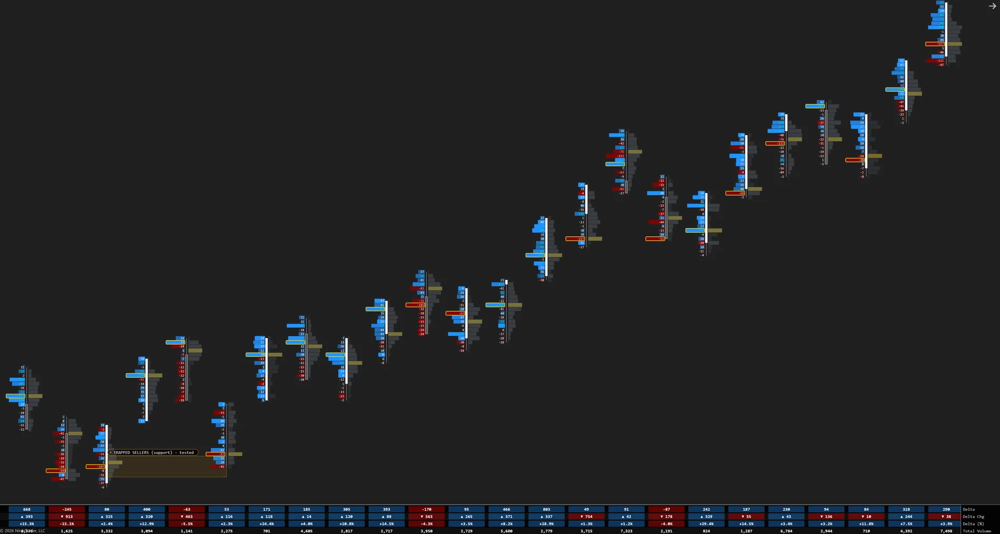
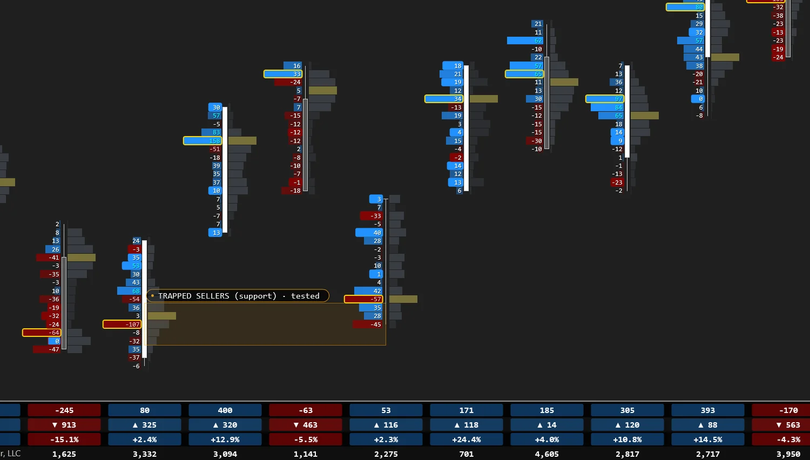
What you see, happened. Every number comes from individual trades classified tick by tick against the live bid/ask at the exact moment of each execution. Nothing interpolated, nothing smoothed, nothing repainted.
Delta and volume by price
Every candle broken down row by row: buys against the ask, sells against the bid, their net difference and total business. Delta and volume POCs marked in gold.
Diagonal imbalances
Automatic detection with the classic diagonal convention, configurable ratio and minimum-delta filter. Real imbalance, without false positives at the extremes.
Stacked & trapped zones
Stacked imbalances become living support and resistance zones — and when one fails, it is reborn as a trapped-traders zone: fuel for the other side.
Absorption and exhaustion
Smart signals computed at each candle close: huge volume with no delta at an extreme (absorption) or aggression running out of gas (exhaustion).
Unfinished auctions and Big Prints
Extremes where the auction didn't finish its business, and individual large executions, marked by side directly on the cell where they hit.
Value area and POC migration
VAH, VAL and per-candle value area with configurable percentage, plus the POC migration line connecting the center of gravity candle to candle.
Per-candle statistics table
Delta, delta change, delta %, total volume, imbalances and more — in three visual styles, with every row toggleable separately.
Real-time alerts
Zone touch, zone birth, absorption and exhaustion. All primed on connect: historical data never fires a false alarm.
Smart zoom
The numbers never change with zoom: the text adapts, compacts or yields to the cells — the footprint keeps speaking at any distance.
Historical tick data from your provider. No Tick Replay needed: it loads its own tick series and classifies against the recorded bid/ask (exact by default; Tick Replay available as an optional mode).
Ticks Per Row, Display Mode (candle + footprint or footprint only), imbalance ratio & filter, alerts.
Every row is one price. On the delta side, the left number is selling into the bid and the right number is buying into the ask. Imbalances compare diagonally — buys at one price vs sells one tick below, because that is how the ladder actually fights — and the dominant cell lights up. Three or more stacked imbalances become a zone that extends forward as support/resistance; when it breaks, it flips into a trapped-traders zone: fuel for the other side. A dot on a cell marks a single print at or above your Big Print threshold.
In Data Series, keep your candles small — 1 or 2 (minute, range or volume) — so the footprint stays readable. There is no universal Ticks Per Row: it depends on your instrument AND your candle size — the bigger the candle, the more rows it stacks, so raise Ticks Per Row until the cells read comfortably.
Give the tick series a few seconds to load; on very long charts, reduce the days loaded.
Liquidity Heatmap
The side of the market the tape can't show: resting orders — where size waits, how it moves and what happens when price arrives.
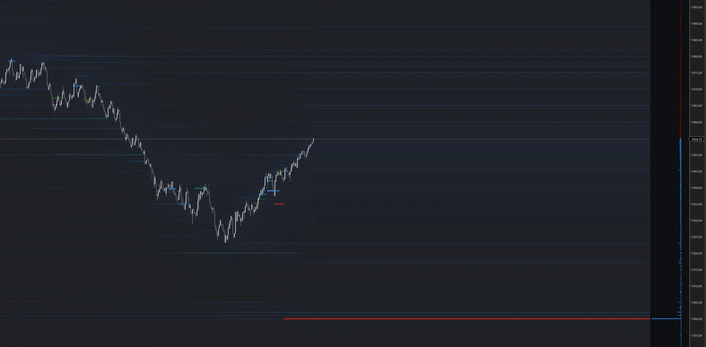
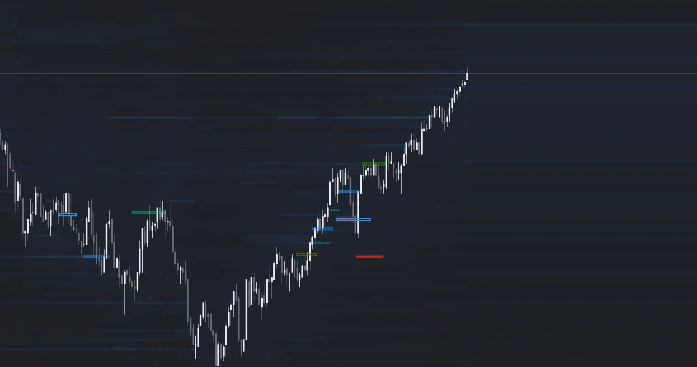
Raw facts only. No scores, no predictions, no repainting the past. Every episode ends in a measured fact — and every defense has its outcome: who won reads straight off the map.
Thermal map of the book
The history of every price painted as heat bands: hot = lots of resting size. The walls waiting for price, visible before it gets there.
Detected absorptions
A level that dies eating real volume gets marked on the map: someone fought there. The number inside tells you how many contracts it swallowed.
Icebergs uncovered
When a level executes more than it ever displayed, it was secretly replenishing. Green edge: the strongest fact this tool prints.
Pulled walls
Size that announces itself and leaves having executed almost nothing, recorded as a measured fact. When they pile up on one side, distrust that side.
Outcome of every defense
If price later crosses a defended level, its mark fades. The map tells you who won each battle — no interpretations.
Bookmap Mode + Volume Dots
Dedicated-platform thermal canvas with executed volume as dots by aggressor: where size rested, where it executed, who won.
DOM-style book panel
The live book anchored to the price axis: bars per level, best bid/ask with a white edge and open-spread warning. Numbers that never shrink.
One scale, the whole session
The same size produces the same color at 9:31 and at 15:59. The morning wall and the afternoon wall compare by eye, honestly.
Session persistence
Map, marks and outcomes are saved every minute: reload the chart and recover your session intact. A reload neither pardons nor condemns any mark.
A data feed with market depth (Level 2). The map builds in real time from the moment you connect; the past is restored from your own saved sessions (auto-saved every minute).
Heatmap Max Reference (contracts = hottest color), Min Liquidity Threshold, Bookmap Mode, Max History (minutes).
Filled chip = absorption (the number inside = contracts it swallowed) · hollow chip = pulled wall (the size that vanished) · border color = side (blue defended from below, red from above) · green border = iceberg · a mark that fades = that level was later broken.
Check that your data subscription includes Level 2 — and remember the map starts painting from now, not from the past.
Session TPO & Volume Profile
A complete Market Profile station in a single indicator: the auction map in letters and real volume by price, side by side, session by session.
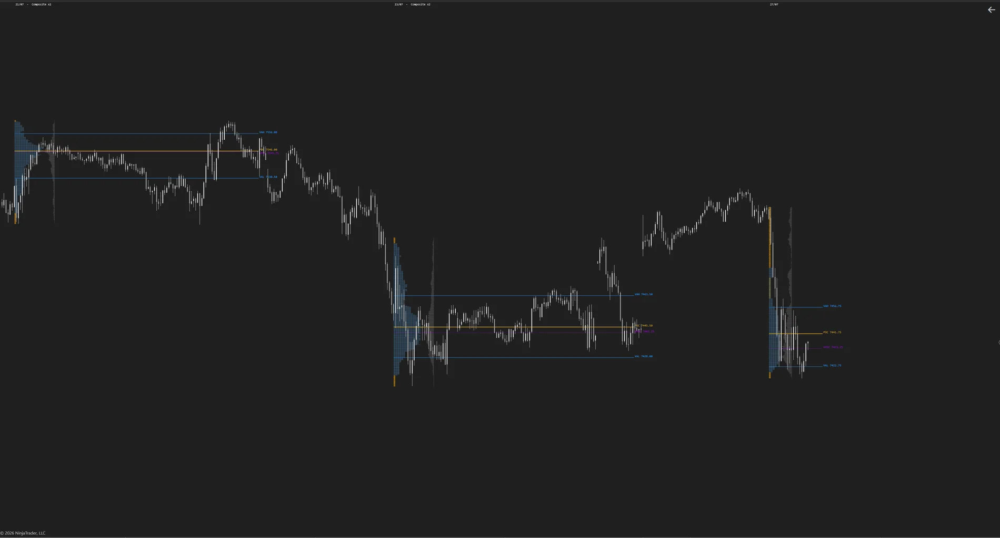
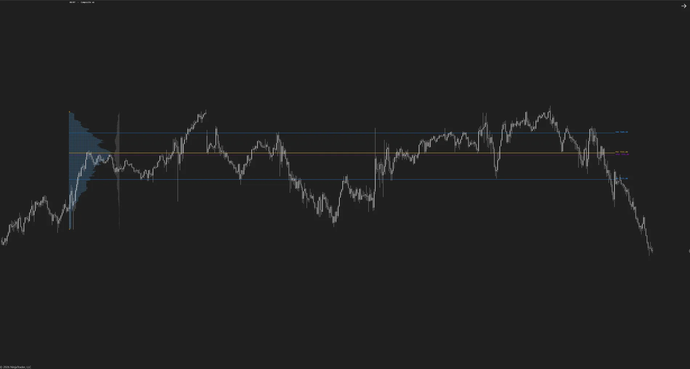
Two truths, face to face. Where the market spent its time and where it committed its volume. When both agree, there's acceptance; when they diverge, there's information — and you see it before anyone else.
The classic TPO profile
The auction's alphabet letter by letter, with POC, value area, single prints, rejection tails and poor highs/lows — the complete grammar of Market Profile, automated.
Independent Volume Profile
Real traded volume by price with its own VPOC and its own value area, with separately configurable row resolution. Two lenses, one chart.
POC vs VPOC: the disagreement that informs
When the time-based and volume-based points of control diverge, the market is telling you something. Resolving that conflict is one of the finest reads in profile trading.
Merge and split with right-click
Merge several balance days into a composite profile and trade its edges; split a double-distribution day to see both auctions. Your view decisions survive reloads and restarts.
Five families of naked levels
Untested POCs, VPOCs, value areas and midpoints, extended forward until price trades through them — with tick-exact detection. The market's open questions, always in sight.
Initial Balance and markers
The initial range that frames the day's hypothesis, plus open and close markers for every session. The day's context, at a glance.
Continuous institutional zoom
Letters grow and shrink fluidly with the chart, and the profile widens under heavy zoom — the behavior of high-end desktop platforms.
Sessions your way
RTH, overnight, the chart's session or custom hours. Every profile respects your session definition, in your time zone.
Loads in seconds
Instant historical profiles or exact tick-by-tick reconstruction: you choose the balance between speed and absolute precision. Real time is always tick by tick.
Minute history (loads in seconds) or tick history (exact reconstruction) — you choose in the settings. Live is always tick-by-tick.
Session (RTH / overnight / custom hours + time zone), TPO Chars, VP row resolution, historical profiles on/off.
Each letter is one time bracket that visited that price (A the first, B the next…), so a long row means the market spent time there — acceptance. Singles — rows printed by a single bracket — mark where price crossed fast, without acceptance. A poor high/low, an extreme where two or more brackets stopped at the same row, is unfinished business that tends to get revisited. Naked POC/VPOC lines extend from past sessions until price finally touches them.
Merge Session Right (build composites), Remove Merging, Split Session At Letter (cuts exactly at the letter under your cursor), Unsplit Session, and Split/Unsplit Letters. Your merges and splits persist — they survive reloads and restarts.
Make sure the configured session matches your instrument's trading hours.
Big Trades
The institutional execution detector: every bubble on the chart is a large trade that actually happened — exact price, exact volume, aggressor identified.
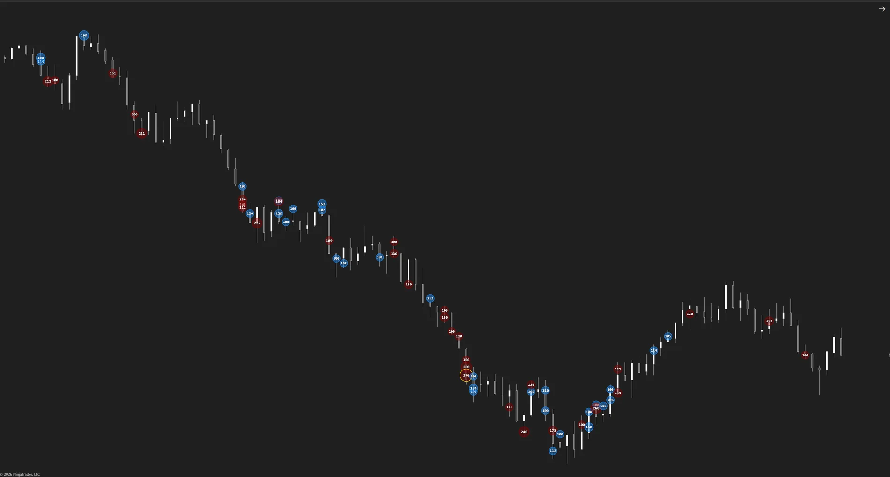
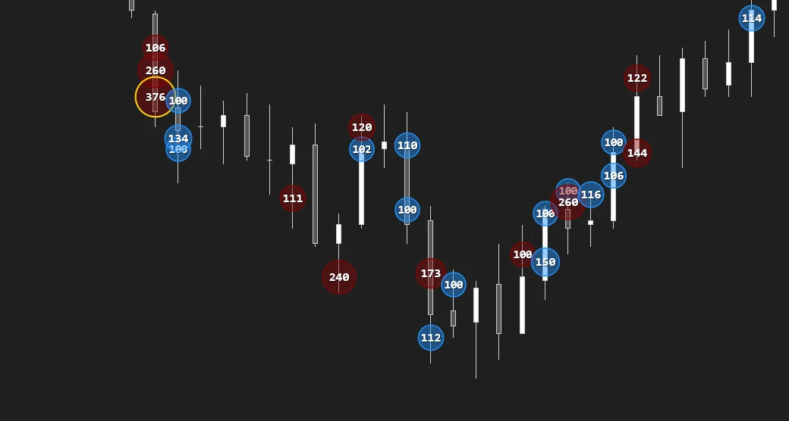
The layer cheap detectors can't see. When an institution sends 127 contracts, the exchange reports them as 70+57 in the same instant — and simple detectors see two “small” trades and stay silent. Big Trades reconstructs the original order and draws it at its true size.
Reconstructed sweeps
Same instant, same aggressor side, price without pullback: the institutional order recomposed and drawn as a single event at the price where it really traded.
Bubbles that don't lie
Area proportional to volume, the exact number inside, color by aggressor side — and a golden ring marking the largest event in sight.
Accumulation levels
Prices where institutional size stacks up become lines of interest with their badge: “708 S54%” = 708 contracts, 54% sold. No ambiguity.
Big Delta
A CVD built only from institutional-size trades — often cleaner than the full delta. If price breaks out and Big Delta doesn't follow, size isn't participating.
Iceberg hunter in action
An iceberg's refills leave repeated prints and sweeps at the same price — exactly what accumulation levels bring to the surface.
Fresh session mode
Open the chart clean and turn every new bubble into an event, while statistics keep processing the full session underneath.
Tick data (own series; exact history from the recorded bid/ask — no Tick Replay needed).
Print Threshold and tiers 2/3 — size them to YOUR instrument (big in ES is not big in NQ); Detect Sweeps and Sweep Window (ms).
One bubble is one institutional execution at its true size — area proportional to volume, the exact number inside, color by aggressor side, and a golden ring on the largest event in sight. When big prints keep stacking at one price they build an accumulation level: its badge (“708 S54%”) reads 708 contracts, 54% of them sold — not just where size worked, but which side was doing it.
Raise or lower the threshold — it's always the first knob.
Delta Suite
The aggression of every trade — who lifted the offer, who hit the bid — turned into three professional views in its own panel.
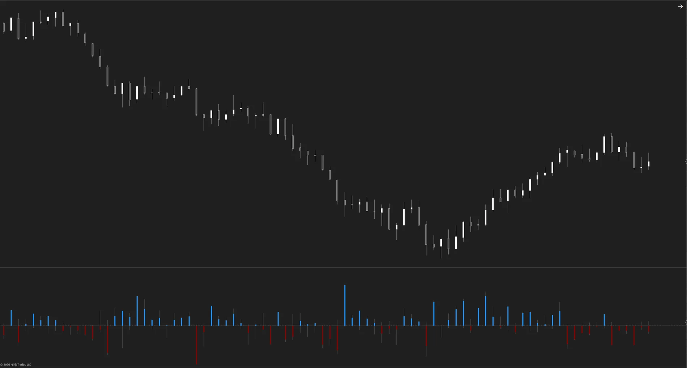
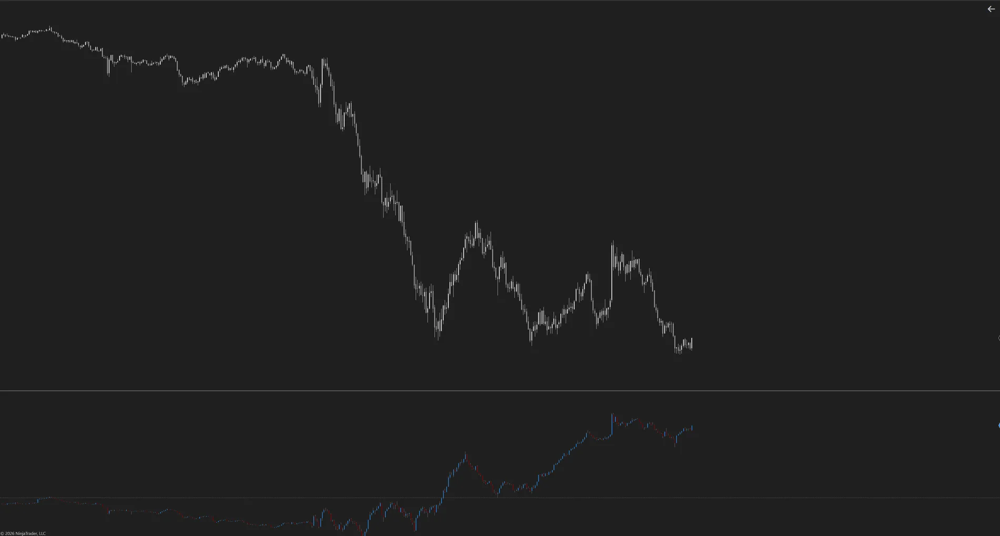
The net number hides the battle. A candle closing at +50 after visiting −300 is not the same as a clean +50. Delta Suite's excursion wick shows you the absorption the final delta doesn't tell.
BarDelta with excursion wick
Each candle's net delta plus the intra-candle story: from the lowest to the highest point aggression visited. The whole battle, not just the result.
DeltaPct: the conviction view
+200 delta on 400 contracts is 50% dominance; on 4,000 it's a 5% stalemate. In climaxes, this view exposes the absorber.
CVD as candles or line
The session's cumulative delta as OHLC candles of accumulation. The underlying question, answered: who's in control, and whether that control is growing.
Divergences that never repaint
Price highs without CVD highs, marked on confirmed swings. A mark placed is a mark that doesn't move — ever.
Institutional lens
One switch rebuilds all three views using only large trades: if size's CVD disagrees with the total, you know what each crowd is doing.
Self-auditable to the contract
The per-candle total matches NinjaTrader's native volume exactly — check it yourself anytime. Data that shows its face.
Tick data. Add it as its own lower panel (not over price). Exact history by default (recorded bid/ask); Tick Replay optional.
Mode (BarDelta / DeltaPct / CVD), Source (all volume or institutional only), Session (RTH/ETH), CVD style.
Each histogram bar is the net aggression of that candle — positive, market buys dominated; Delta % normalizes it by volume so a quiet candle can still show conviction. The CVD is the running total: the trend of aggression. When price makes a new extreme and the CVD refuses to follow, that move carried less aggression than it appears — the classic divergence (optional marks included).
The per-candle total matches NinjaTrader's native volume — compare them anytime.
Delta Profile
Who is winning the auction at every price, as a clean strip anchored to the chart's edge — with three ways to define “now”.
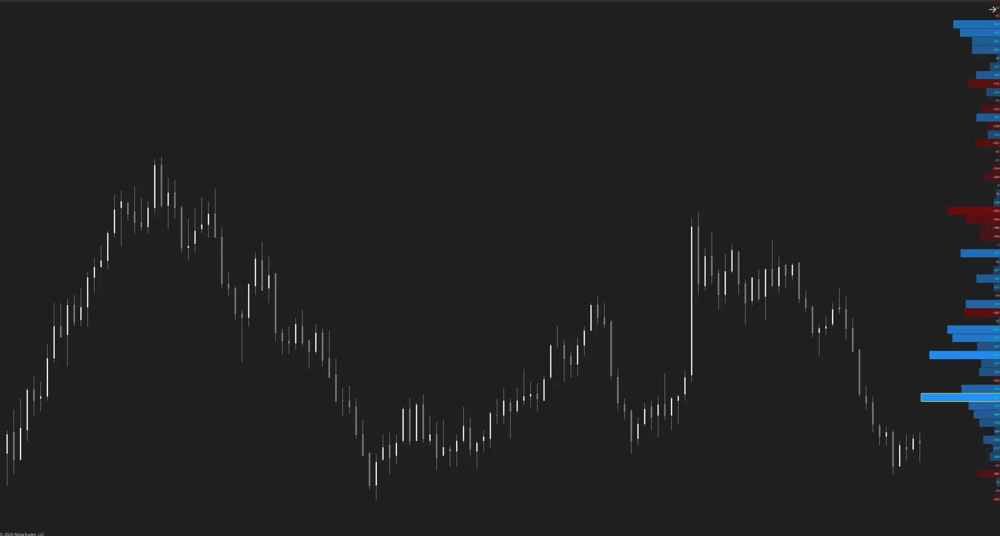
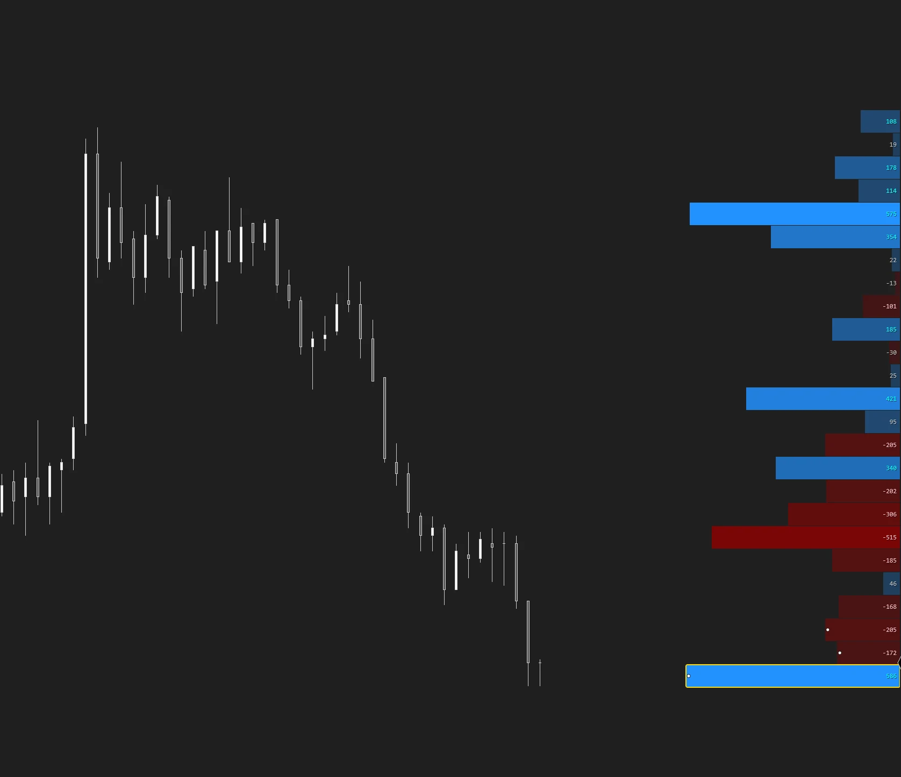
Are you buying the push… or its echo? Rolling mode always contains exactly the last N minutes, and its freshness dots mark where aggression is happening right now — not the residue of a battle that already expired.
The auction by price
Aggressive delta per price row, with an intensity gradient and the max-delta row outlined in gold: the price where one side committed hardest.
Rolling: always the latest
A window that slides continuously, with no blind spot after a restart and no stale delta from hours ago. Data freshness guaranteed at every instant.
Freshness dots
White marks on the rows where aggression is genuinely recent — the difference between joining a live move and arriving late to a dead one.
DELTA vs PREV: the derivative
The card compares the current window with the previous one: +840 now versus +200 before = buyers accelerating. Opposite signs = a turn in progress.
Naked max-delta levels
Every closed period leaves its golden line where the aggressor prevailed — alive until price retests it, with tick-exact detection. Pure aggression memory.
The session's pulse
B 62% / S 38% at a glance: a 50/50 with a huge total is a battle; a 70/30 with a small total is an unopposed drift.
Tick data (own series).
Anchor Mode (Session / Rolling / Reset), Rolling Minutes (your “now”: 30-60 min is typical), RTH/ETH hours, Placement (left or right edge).
One horizontal bar per price at the chart's edge — blue, net buying won at that price; dark red, net selling won; the longer the bar, the bigger the net fight. It answers who is winning at each price inside the window you anchored — which is why Anchor Mode matters: Session is today's whole story, Rolling only your last N minutes.
Rolling mode needs its first window minutes to fill.
Fixed Range Volume Profile
Tick-exact volume profiles over any range of candles — drawn, moved and resized directly on the chart with your mouse.
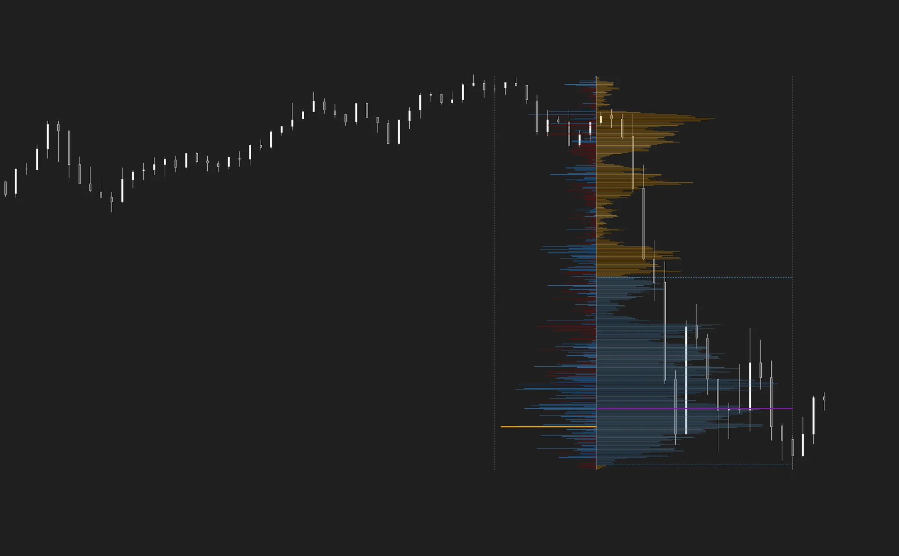
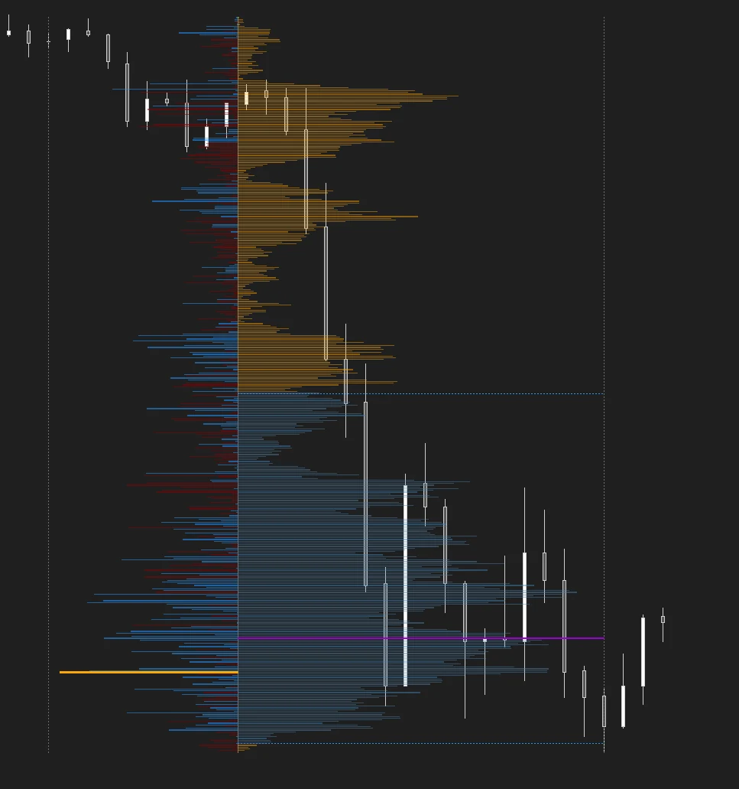
Not just where the market traded: who won at each price. Its signature is the “d b” layout: per-row delta back to back with volume, from a shared axis. Two questions, one silhouette.
Right-click and done
“Add Fixed Range Profile Here” and a profile is born where you pointed. Move it, stretch it, keep several at once — edges snap to candles, never to pixels.
Delta back to back
Volume tells you where price was accepted; delta tells you who paid for it. The max-delta row is outlined: the price of the range's biggest commitment.
Living ranges
Drag the right edge to the last candle and the profile stays glued to the present: a session profile that starts exactly where you decide.
Projected levels
vPOC, VAH and VAL extended to the right edge as tradable levels, with their exact prices printed on the lines.
Total persistence
Every profile is saved to disk per instrument. Reloads, workspace changes, restarts: your ranges always wait for you where you left them.
Impulse reading
Profile a strong leg: delta concentrated at the start = it tends to mean it traveled on inertia; concentrated at the end, that it was still being fought. Information no candlestick chart gives you.
Tick data.
Everything lives in the right-click menu — “Add Fixed Range Profile Here”, “Remove This Profile”, “Remove All Fixed Range Profiles”; drag the edges to move or stretch; Delta Placement and projected levels.
The profile is the auction of only the bars you framed. Its POC is where that episode did most of its business (the fight's center of gravity), the value area is where it was accepted, and the delta side shows who was paying at each row. Frame an impulse or a battle zone and the shape tends to answer who won it.
Your ranges auto-save per instrument — they survive reloads and restarts.
Anchored Volume Profile
The real volume map of any time window — session, week, month, quarter, fixed range or rolling window — in a clean histogram anchored to the panel.
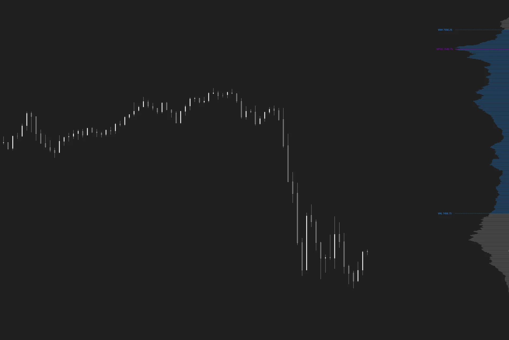
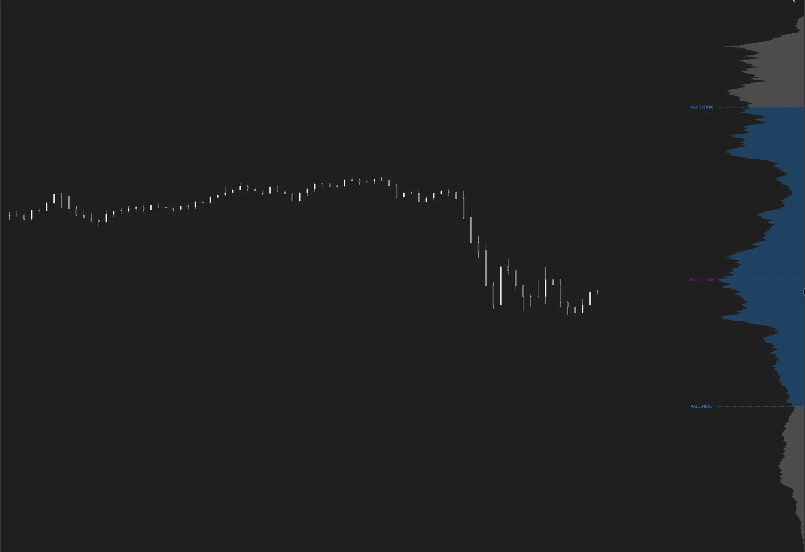
Whatever context you want, instantly. It only loads the window's own data — never the chart's full history — so it opens in seconds no matter how many days your chart holds. And if your connection drops and returns, it reloads itself: always exact.
Eleven time windows
Current RTH or ETH session, current or previous week, month and quarter, fixed range to the second, rolling windows of N minutes, days or weeks, or the candles visible on screen.
Periods that manage themselves
When a new week is born, the “previous week” updates itself. Rolling windows add the new and subtract exactly what leaves. Zero maintenance.
VPOC, value area, HVN and LVN
The window's strongest magnet, the acceptance range, the shelves where price brakes and the gaps it crosses fast — the levels professionals trade.
Institutional anchoring
Weeks, months and quarters anchored to the trading day, not the calendar. Holidays, shortened sessions and data gaps can't move the anchor.
Two resolutions
Minute to load in seconds with exact total volume, or tick-by-tick for absolute precision. Live, always tick-exact.
Double the read
Add it twice — one on each edge of the panel — and trade with last week's map facing the current session's, side by side.
Minute data (fast) or tick data (exact) — Data Resolution. Live is always tick-exact.
Profile Timeframe (the eleven windows), Session Time Zone, Tick Compression (groups rows on fine-tick instruments).
One profile is one auction at your chosen scale. Its POC is that window's fairest price; VAH/VAL frame where roughly 70% of its business happened. The same price can be expensive for the day and cheap for the week — that is exactly why running two (one per border) and letting the scales disagree is so informative.
Add it twice — one per panel edge — to face two windows off against each other.
VWAP Suite
Five indicators, one standard: the daily, weekly, monthly, quarterly and yearly VWAP with deviation channels — the reference prices institutions measure their executions against.
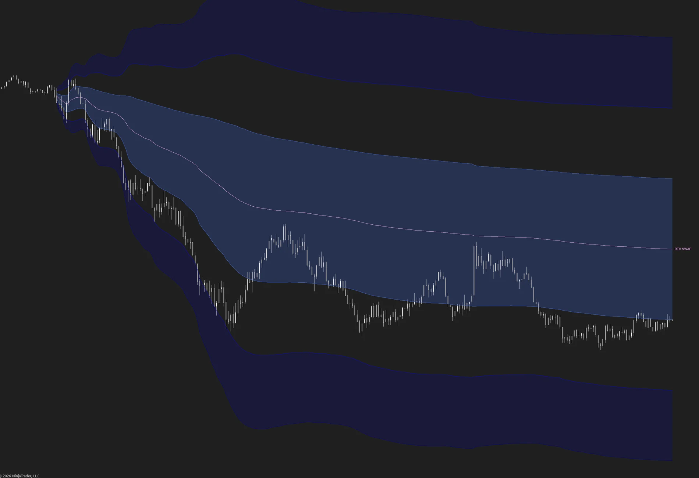
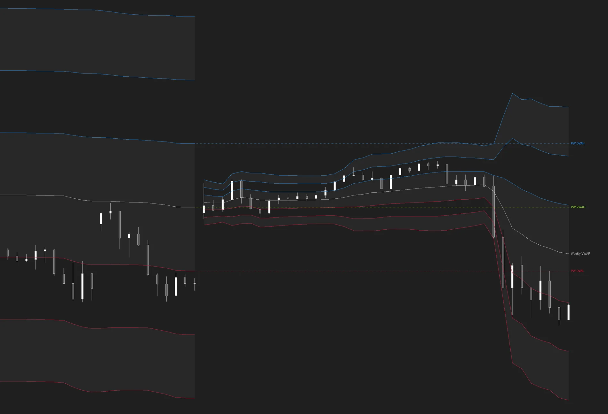
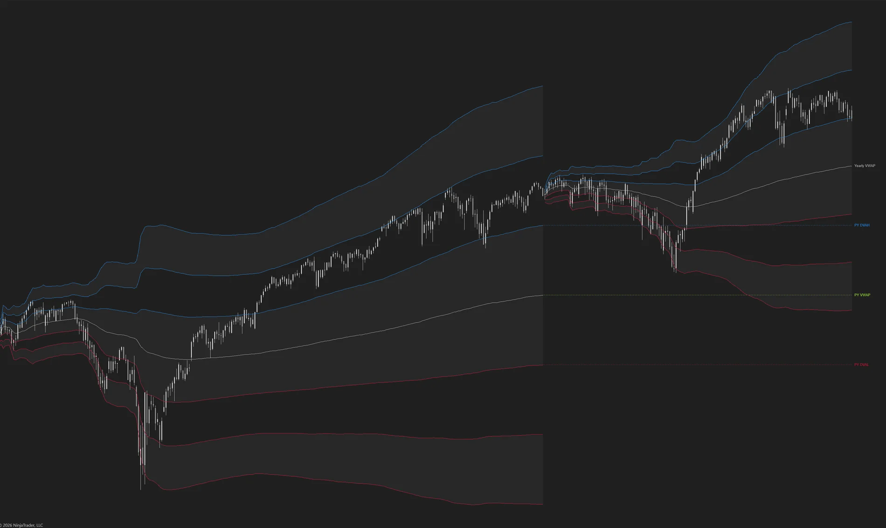
The VWAP that prints the same value on any chart. Most tools approximate it from candles: their value drifts and even changes with the timeframe. MATE's VWAPs are computed trade by trade — the true value, on any chart, always.
The five horizons
Daily (RTH and ETH separately), Weekly, Monthly, Quarterly and Yearly. From the intraday pulse to the anchor that position traders watch for months — the whole time hierarchy covered.
Up to five bands per VWAP
Deviation channels with per-band multiplier, colors and fill — in volume-weighted standard deviation or quarters of the true range, Market Profile style.
Prior Values: the period's memory
When each session, week, month or year closes, its VWAP and value channel are frozen and projected forward — the levels of the market's last agreement, ready for their first test.
Strictly individual periods
Each VWAP is born from zero at its open and dies at its close: no line ever crosses into the next period. No cross-session contamination, no false inheritances.
Institutional anchoring
Weeks, months, quarters and years anchored to the trading day — the professionals' convention. Holidays, shortened sessions and data gaps can't move the anchor.
Your session, your time zone
Configurable session hours interpreted in the zone you choose, with automatic daylight saving. 09:30 New York is the open, wherever you are.
Tick data (computed trade by trade — the same value on any chart).
Each horizon is its own indicator (add Daily, Weekly… the ones you use); session hours + time zone; band multipliers; Prior Values for the frozen levels of the last period.
The center line is the average price actually paid in the session, weighted by volume — the market's running fair price. The bands measure how stretched price is from that average, in deviations or quarter-range. Prior Values freeze the previous period's VWAP and bands on today's chart: reference levels many desks benchmark against, which is why they tend to get tested.
Check session hours and time zone — a VWAP is only as good as its session definition.
MGI Suite
Market Generated Information across five horizons — daily, weekly, monthly, quarterly and yearly: the levels the market generates and then respects, drawn automatically on your chart.
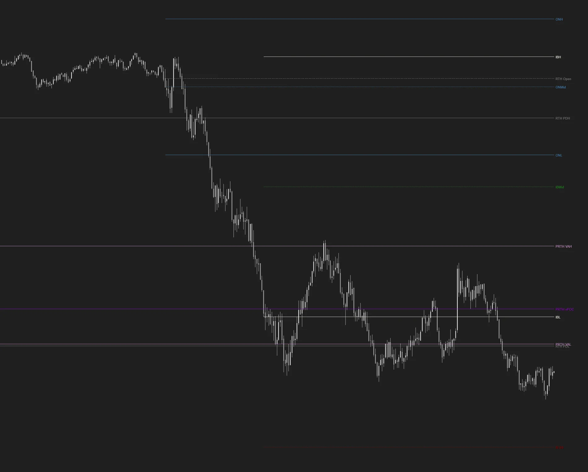
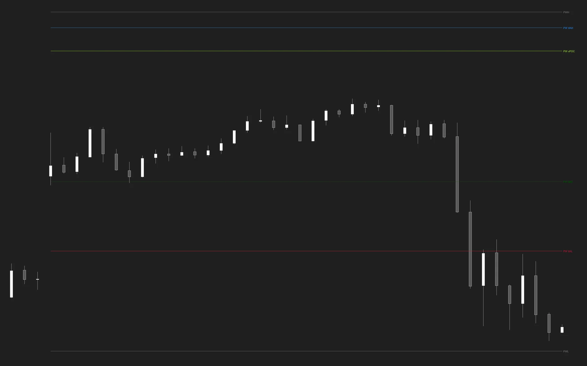
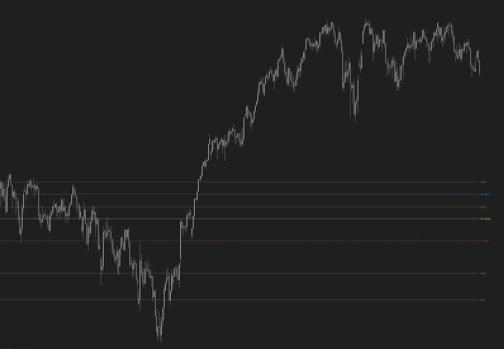
The day's map, ready before the open. Overnight range, Initial Balance with extensions, previous-period levels, tick-exact value areas, Half Gap and session VWAPs — every level appears only once defined, frozen at its exact time, and never repaints.
The complete intraday arsenal
ONH/ONL, Initial Balance with projected extensions, previous-day RTH and ETH levels, PRTH, PETH and overnight value areas, session VWAPs and the Half Gap — the classic gap magnet.
The memory of every horizon
Previous period's high, low, midpoint, open, close and value area — weekly, monthly, quarterly and yearly. Untested POCs from these frames tend to get revisited weeks later.
Automatic confluence zones
When two or more independent levels stack within a few ticks, the indicator shades the band: the highest-probability reaction areas, detected for you.
Auction classification
Value Higher, Lower, Inside, Outside or Overlap: each period classifies itself by comparing its developing value with the previous one. The day's context, summed up in one label.
First-touch alerts
An alert the first time price touches each key level — once per level and period, live only. Stop watching lines: wait for the call.
Study-the-past mode
Enable previous periods and every past day, week or month shows exactly what its trader saw back then — the perfect tool to study how price respects each level.
Enough history on the chart (Days of History controls how much past is drawn).
RTH / overnight / ETH hours (the foundation of every level!), Initial Balance (minutes), first-touch alerts, study-the-past mode.
Every line carries its label on the chart, and each one is born at its exact minute — the overnight range completes at the open, the IB after its first minutes, and so on. They matter because they are the references the whole market watches: the first touch of a fresh level tends to be the most informative, and that is exactly what the alerts watch.
It hasn't been defined yet — every level is born at its exact time. Not a bug: honesty.
Lag Sentinel
The silent guardian of your trading: it watches the three pipes your money flows through — the data coming in, the orders going out and the platform painting it all.
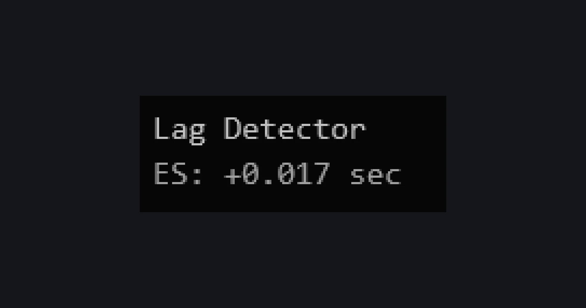
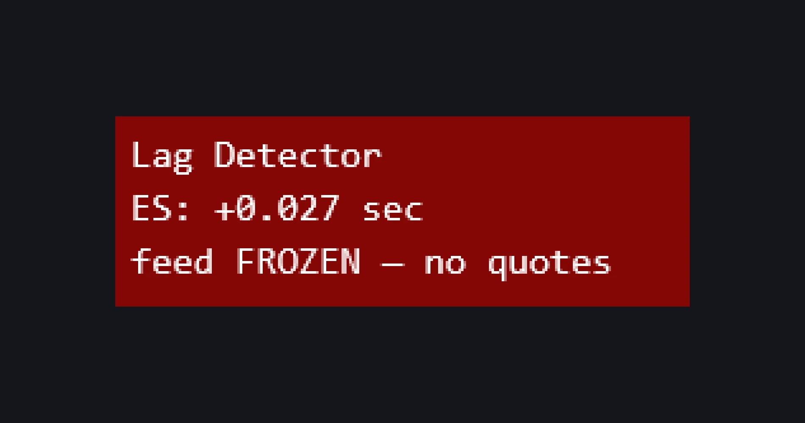
Is what you see on screen really the market, right now? Lag Sentinel answers that question honestly: it stays silent while everything is healthy, and when a pipe degrades, one line names the culprit. When it heals, it disappears.
Honest measurement, not theater
Cheap lag detectors print physically impossible numbers because they mix PC clock error with latency. Lag Sentinel measures deviation against your own session's baseline — immune to time zones and skewed clocks.
Data: live feed or frozen
It distinguishes what others confuse: a quiet tape is not a dead feed. It watches trades and quotes separately — quote silence is a frozen feed; trade silence with live quotes is just a quiet market.
Orders: the lag that costs money
It measures the real submit-to-acknowledge time of your own orders — it only listens, never touches them. Scalping with slow acknowledgements is paying a hidden spread; here you see it before you pay it.
Platform: when NT8 chokes
A background heartbeat detects when NinjaTrader's interface paints behind reality — too many charts, too many indicators. Your data may be fine; your picture of it, not.
Amber warns, red means stop
Amber background: something is slow — trade with margin. Red background, frozen feed: stop trusting the chart and manage risk from the broker. The color always reflects the worst pipe.
Robust statistics by construction
Medians and P95 over 60-second windows with hysteresis: a stray tick never screams, a sustained delay always does. And everything heals by itself, no intervention.
Nothing special. Add it and forget it: silence means everything is healthy.
Warning thresholds and text position. The defaults are tuned to never cry wolf.
A small text line on your chart — gray on black, everything healthy; amber, a sustained warning above your thresholds; dark red, a real problem. It watches three things by pure listening: your data feed's delay, your order round-trip (submit to ack) and NinjaTrader's own UI thread. It never touches your orders — and if you never notice it, everything is fine.
Auction Context
A single panel answering, before and during every session, the question every auction trader asks: how big is today compared to a normal day?
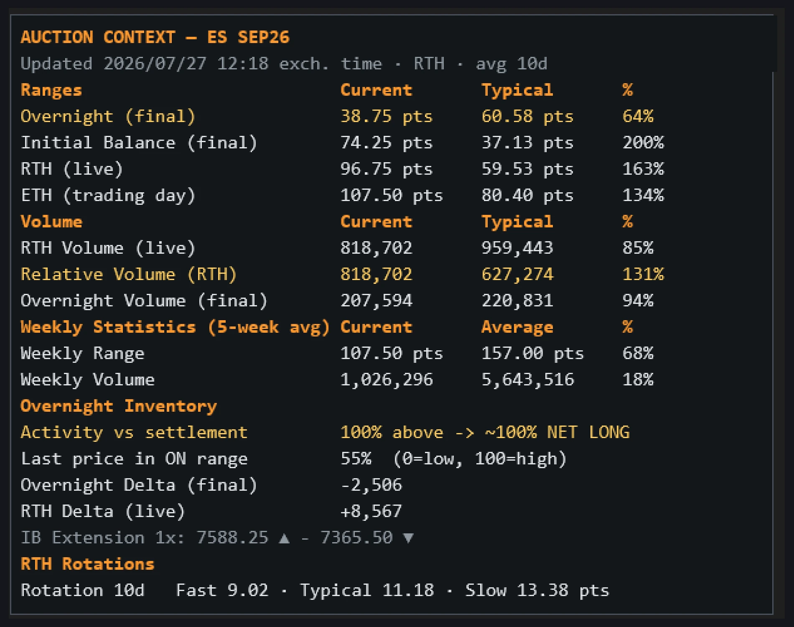
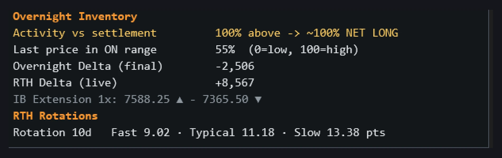
The pre-open in ten seconds. Ranges against their typical, relative volume by clock minute, overnight inventory and rotations — every number is a real measurement of your own instrument, and the developing day never contaminates its own averages. Honest context, not magic signals.
Ranges against normal
Overnight, Initial Balance, RTH and ETH measured against their N-day typical. One percentage and you know: today is compressed, normal or extended — and you adjust targets instead of trading every day the same.
RVOL by clock minute
Your cumulative volume compared against the typical cumulative at this exact minute of the session — because comparing 10:00 against a full-day average means nothing.
Overnight inventory
How much of the night traded above or below settlement: who arrives loaded at the open. A 100% one-sided night is information the first hour will put to the test.
Exact delta, not estimated
Overnight and session delta classified tick by tick against the bid/ask recorded with each trade — the overnight frozen at the open, the day's accumulated live.
Rotation calculator
Three parallel detectors with thresholds that adapt to current volatility: your instrument's natural swing unit, right now. And the current leg measured against the average — routine rotation or something bigger?
Radical honesty with data
Every value is a real measurement or an explicit N/A with its reason — never a silently degraded number. Averages are fed only with complete, closed sessions.
Times are interpreted in ET (New York), or use your Trading Hours template. Loads its own minute + tick series.
Lookback (days) — the “normal” it compares against; Initial Balance (minutes); median vs mean; panel position.
Each row compares today against your instrument's own normal — current value, typical value and percent of typical — built from your lookback (median or mean, your choice). That turns raw numbers into context: an Initial Balance at 150% of typical is a very different day from one at 60%.
That's deliberate — not enough complete sessions yet for an honest average.
Try everything, 7 days, free
Full access to the suite, no credit card. Buy knowing exactly what you're getting.
Start free trial